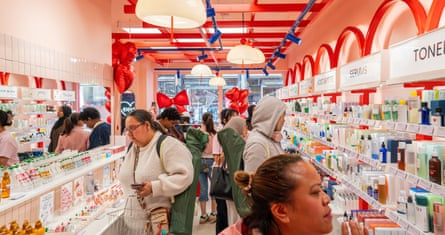
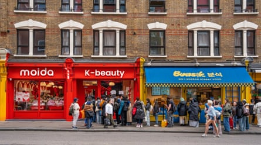

Korean beauty products are moving from phone screens to UK high streets as social media drives sales of skincare with the help of eye-catching ingredients such as snail slime and salmon sperm.
Retailers are looking to capitalise on the TikTok and Instagram trend for skincare and makeup ranges from South Korea – known as K-beauty – by opening physical stores and launching brands in a push to get consumers to pick up products that havegone viral online.
While some of the ranges have been available on specialist beauty websites for some time, British shoppers are now getting the chance to try them out on their skin and assess their supposed wondrous effects.
A big K-beauty draw is the ‘glass skin’ look where your face is drenched in moisture to give a dewy, luminous look.Photograph: tiktok
The trend is another example of South Korea’s growing cultural prominence where food, film, TV and K-pop, with its international stars such as the boyband BTS , are becoming big business as companies expand into large consumer markets such as Britain.
K-beauty’s positive reputation stems in part from Korea’s tradition of using natural substances in products, making them gentle on the skin, and its strict rules around labelling. The industry is also known for novel formulations and unexpected packaging (sometimes animal-shaped), although many shoppers discover brands such as Beauty of Joseon and Laneige through reviews by influencers.
Georgia Stafford, of the market research firm Mintel, says: “Social media is the driving force behind K-beauty’s popularity in the UK, where 34% of users have bought a beauty or grooming product after seeing it on social media, rising to 58% of Gen Z users.”
A fifth (21%) of Gen Z consumers (aged 13-28) use K-beauty products, according to Mintel, compared with 8% overall. They are more likely to follow the complex 10-step skincare routines popular in South Korea, or try to get the “glass skin” look beloved by the beauty industry, where your face is drenched in moisture to give a dewy, luminous look.
K-beauty products have previously had a “relatively limited audience”, according to Stafford, as they were unavailable on most high streets. However, online popularity could now translate to in-person purchases.
Shoppers can now buy products such as Cosrx’s skin essence containing snail mucin – slime to the uninitiated – at Superdrug and Boots. The latter store also sells Anua’s face serum with PDRN (polydeoxyribonucleotide), which contains DNA fragments extracted from salmon sperm and is claimed to hydrate the skin deeply.
K-beauty products are “typically a fraction of the cost” compared with those from established premium brands, says Stafford. “Experimenting with new products and ingredients is therefore accessible to consumers. PDRN is a standout example. The ingredient promotes collagen production and its source is a real conversation starter!”
Boots, Britain’s biggest beauty retailer, sold a Korean skincare product almost every 15 seconds between December and the end of February and in recent months has expanded the range of products it stocks.
While consumers may be tightening their belts in other areas, spending on pharmacy, health and beauty has emerged as an outlier. Figures from Barclays show spend in this area was on average 10.2% higher during the first three months of the year, compared with the same period in 2024.
The opening of a Moida store on Charing Cross Road in London.Photograph: Moida
The Korean retailer Moida (which translates as “to gather” or “to collect”) launched its first UK store in west London’s Westfield shopping centre in December and opened its second in the capital this month.
The new shop, fitted out in pink and red and located near Leicester Square, is close to its fellow Korean beauty retailer PureSeoul, which now has eight outlets across the UK – including Birmingham, Manchester, Oxford and Cambridge – and is opening a further two this year.
Meanwhile, the Korean beauty rival Skin Cupid has signed a 10-year lease for a UK outlet in central London close to Tottenham Court Road after the success of a nearby fortnight-long pop-up during the festive season.
The electronics giant LG is best known for its smart TVs and washer dryers, but the company’s first product, launched in 1947, was a moisturiser called Lucky Cream. LG hopes to ride the boom in interest in all things Korean through the expansion of its beauty arm, LG Household & Health Care (LG H&H). It launched its K-beauty brand Belif in the UK at the start of May, initially at online retailers and two London branches of retailer GlamTouch.
LG is also looking at opening physical stores, says Steven Jeong, the managing director of LG H&H UK. “While our initial strategy focuses on online channels, we believe that in-person experiences are an essential part of the skincare journey, especially when it comes to texture and personalised consultation.” The company hopes to “establish an offline presence” from June, he says.
Many consumers are also drawn to K-beauty as part of the wider rise in interest in Korea’s cultural exports, known as the Korean wave ( hallyu ) . K-beauty is forecast to be a $18.3bn (£13.7bn) global business by 2030 , according to a Straits Research report, growing at a rate of 9% each year from 2022 to the end of the decade.
From left: Ike Lawson, Jess Zhang and Georgia Spooner outside a branch of PureSeoul on Charing Cross Road.Photograph: Joanna Partridge
“I watch K-drama,” says Ike Lawson, 28, browsing the shelves of a central London PureSeoul store with two colleagues during her lunchbreak. “K-beauty products work for me, like the snail mucin serum. I went to Korea in 2023 to raid the skincare, but mostly for the food,” she says.
Lining the shelves of PureSeoul are stylish tubes and bottles of products, many boasting ingredients unfamiliar to the British market, ranging from mung beans and mugwort to propolis, which is extracted from bees.
Lawson’s colleague Georgia Spooner, 27, who has just bought a £22 sunscreen stick for her upcoming holiday, says she has noticed “more shops popping up”, after first discovering K-beauty on social media. “It’s more mainstream now.”
This Charing Cross Road branch of PureSeoul is something of a Korean hub with grocery shops and restaurants. Such locations appeal to retailers when choosing a space, says Matt Peters, a specialist in retail in the London office of the property company Savills.
“Whilst these brands are looking to focus and showcase their product to a western audience, a lot of them will like to align with other Asian-focused businesses within a location,” Peters says.
Moida’s Charing Cross Road store opens next to a Korean street food outlet.Photograph: Moida
K-beauty retailers are among those filling in gaps on British high streets, according to Savills, with some signing 10-year leases, signalling their intention to commit to a location for a considerable period.
Peters says: “These retailers see this as a long-term movement, this isn’t a flash in the pan. K-beauty has been in the UK for over five years now. It’s a sector that is increasing in terms of product sold over different retailers.”
As shoppers prioritise spending on wellness and cosmetics, property analysts expect K-beauty retailers will continue to eye up other areas outside London based on the location of their most loyal online shoppers.
Moida is planning further expansion across the UK and intends to take a step outside London, taking its snail slime and other skincare novelties to Manchester in the summer.